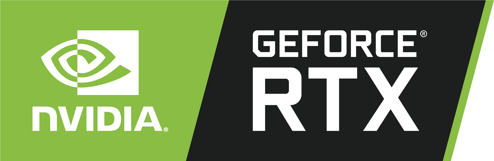
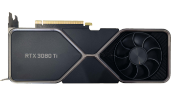
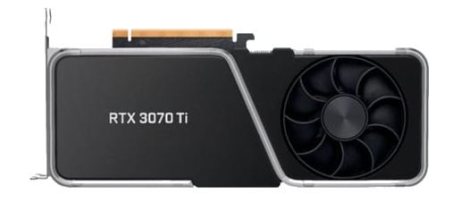
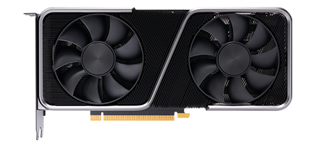
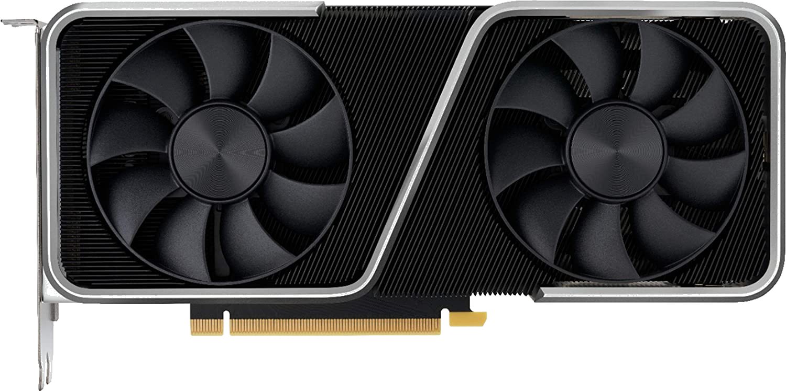
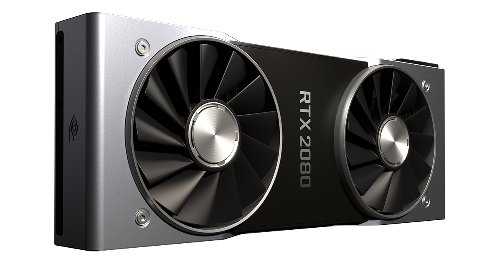
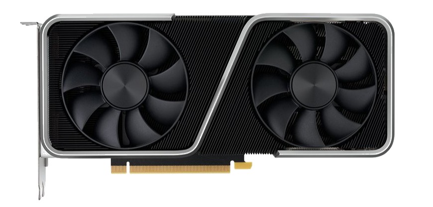
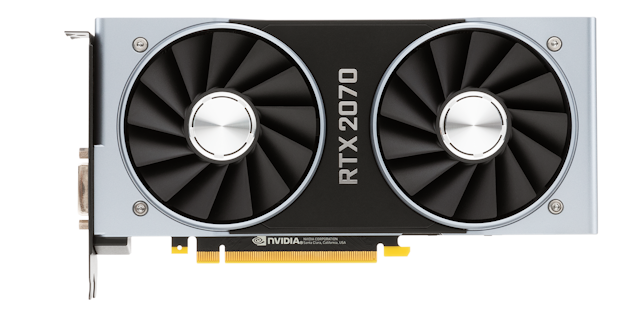
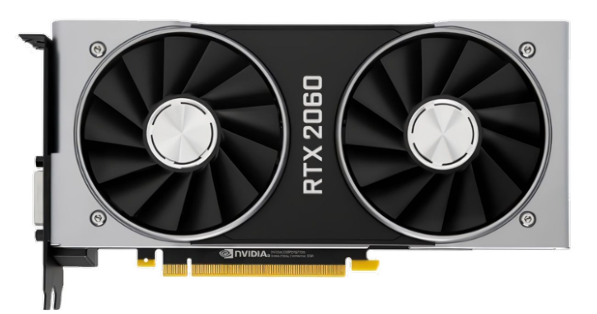

Nvidia Corporation est une entreprise américaine spécialisée dans
la conception de processeurs graphiques, de cartes graphiques et de
puces graphiques pour PC et consoles de jeux (Xbox, PlayStation 3,
Nintendo Switch). Son siège est à Santa Clara en Californie.
Nvidia est une société de type « fabless », c'est-à-dire qu'elle
conçoit ses puces dans ses centres de recherches, mais qu'elle
sous-traite leur production à d'autres sociétés de semi-conducteurs.
L'entreprise conçoit principalement des circuits graphiques allant
du modèle pour netbook (Nvidia Ion) aux puissants modèles destinés aux
gamers (GeForce), voire au monde professionnel (Nvidia Quadro et autres).
Les produits NVIDIA
Les cartes graphiques

Nvidia produit principalement des processeurs graphiques, utilisées
majoritairement dans les PC, mais de plus en plus, ses processeurs
hautes performances sont utilisés dans des machines de calcul
professionnelles. Parmis les modèles les plus vendus, on trouve la
série de GPU RTX, dont le dernier modèle est la RTX 3090ti, sortie
le 29 mars 2022. La série RTX 40 est déjà prévue par NVIDIA qui
pourrait en annoncer la sortie avant la fin de cette année
Performances
Année
modèle
fps en 1080p (FHD)
fps en 1440p (QHD)
fps en 4K (UHD)
image
2020
RTX 3090
254
193
121
2021
RTX 3080ti
240
183
110

2020
RTX 3080
228
173
105
2021
RTX 3070ti
195
144
92

2020
RTX 3070
185
135
81

2018
RTX 2080ti
165
126
76
2020
RTX 3060ti
152
115
70

2018
RTX 2080
142
106
63

2020
RTX 3060
136
102
61

2018
RTX 2070
125
91
55

2019
RTX 2060
112
78
45

Les techonologies NVIDIA
Ray-Tracing (RT)
Le Ray-Tracing (« lancer de rayons » en français) est
une technique de calcul d'optique par ordinateur,
utilisée pour le rendu en synthèse d'image ou pour
des études de systèmes optiques. Elle consiste à
simuler le parcours inverse de la lumière : on
calcule les éclairages de la caméra vers les objets
puis vers les lumières, alors que dans la réalité la
lumière va de la scène vers l'œil. On obtient ainsi un
éclairage réaliste.
Nvidia l'a intégré à ces GPU à partir de la
série RTX, dotée de puce RT spécialisée dans
leur architecture. Cependant, la beauté de l'image
avec les reflets de lumière du RT à un prix : une
baisse de performance à cause de la puissance de calcul
que nécessite le RT. Cela se matérialise par une baisse
d'au moins 20% de fps en jeu.
Deep Learing Super Sampling (DLSS)
Le Deep Learning Super Sampling (super échantillonnage
d’apprentissage profond) est une technologie mise en
place par NVIDIA à partir de la série RTX.
Son objectif ? Augmenter jusqu'à 2 fois le nombre de
fps en jeu. Cette technologie fonctionne par un
upscaling de l'image : l'image est calculée à une
résolution inférieure et les pixels manquants sont
complétés par IA (Intelligence artificielle) grâce à
des tensor cores présents dans le GPU.
On arrive ainsi à obtenir une image de sortie de la
qualité voulue, mais en ayant utilisé moins de
puissance de calcul que pour l'avoir calculé "nativement".
Le résultat final est très proche du natif ce qui ne
gène pas nécessairement le visuel. Cette technologie
existe avec différentes intensité, allant de "qualité"
pour une image la plus complète possible à
"ultra performance" pour un maximum de FPS.
Le DLSS est très utile pour pallier les problèmes de
performance causés par le Ray-Tracing, mais attention,
seul un GPU RTX peut en bénéficier.
NVIDIA Image Scaling (NIS)
Grand frère du DLSS, le NVDIA Image Scaling est également
une technologie d'upscaling de l'image qui permet
d'augmenter les performances du GPU, pour favoriser un
nombre de FPS plus élevé. Il ne fonctionne pas avec des
tensores cores et est compatible avec tous les GPU NVIDIA
(GT, GTX, RTX).
L'image finale ainsi que les performances gagnées ne sont
pas aussi satisfaisantes qu'avec le DLSS, mais on obtient
une moyenne de 20% de fps supplémentaires en sacrifiant
assez peut la qualité d'image.
Deep Learning Dynamic Super Resolution (DLDSR)
Lui, c'est l'inverse du DLSS : au lieu d'upscaler l'image,
il va la calculer dans une résolution plus élevée grâce aux
tensores cores. Cela permet d'obtenir alors une image très
douce, avec un très bon anti-alyasing (technologie qui évite
d'avoir un crénellage des pixels).
La perte de performance, elle est brutale : 25% de fps sont
perdus avec la puissance de calcul nécessaire utilisée par
le DLDSR.
.png)